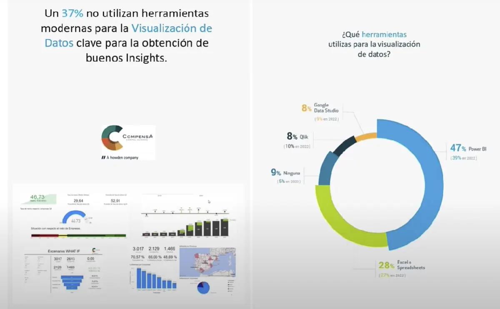

Las presentaciones para la toma de decisiones son herramientas importantes para comunicar información relevante y fundamentada que facilite la comprensión y evaluación de opciones, y promueva una toma de decisiones informada y efectiva. Estas presentaciones deben estar diseñadas de manera clara, estructurada y convincente para guiar a los tomadores de decisiones hacia una elección bien fundamentada.
En Hubspot, Moreno (2023) destaca que una exposición creativa genera mayor empatía y mejores resultados al compartir experiencias y conocimientos con otras personas. Adicionalmente, se mencionan acciones necesarias para lograr mayor impacto en la audiencia objetivo, entre las que destacan el lenguaje no verbal, seleccionar el léxico adecuado, la dicción, tono volumen y velocidad al hablar. Asimismo, se exponen las claves para una presentación exitosa, entre las que están conocer las propias fortalezas, preparar el material de apoyo, revisar el discurso en repetidas ocasiones, conocer el tipo de exposición y entender a la audiencia.
Entre las buenas prácticas para hacer presentaciones ejecutivas recomendadas por los expertos, están: utilizar tecnología, criterios de diseño de las diapositivas, elegir un diseño simple, limpio y profesional, con colores que contrasten y que reflejen la identidad de la marca o la empresa, usar fuentes legibles, títulos claros y subtítulos descriptivos, usar gráficos, tablas, diagramas o infografías para mostrar los datos de forma clara y comprensible. Asegurarse de que los datos sean relevantes, precisos y actualizados, empezar la presentación con un resumen ejecutivo que sintetice el objetivo, el problema, la solución, los beneficios y la recomendación del proyecto, organizar la información en un orden coherente y secuencial, que responda a las preguntas e inquietudes de los directivos o clientes, cuidar el lenguaje corporal, el tono de voz, el contacto visual y la expresión facial, transmitir confianza, seguridad y entusiasmo por el proyecto. Adaptarse al público y al contexto (Hall, 2021).
{{item.Descripcion}} {{item.Observaciones}}
{{item.Significado}} {{item.Fuente}}